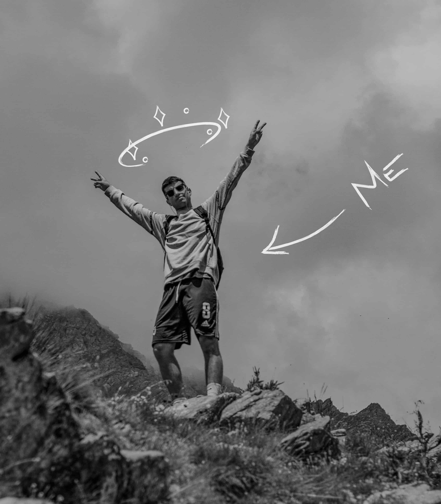

I believe that our works should be enough to define
who we truly are, but the choices we make and the
people we meet are important too.
So if you want to read a short story from and about me,
ok, here we go.


BIOGRAPHY
Hi, my name is Giorgio, I’m a 25 year old and I live in Milan since a year.
I love music, I play guitar, I’ve been in a band for a long time and I live in symbiosis with Spotify.
I enjoy watching a multitude of TV series, and have focused on developing my knowledge in cinematography.
Football is another big passion of mine. I follow many football games and I’ve played in a team for several years before starting university.
However, since primary school I’ve always been described as the typical “intelligent person that could achieve high results with a little more effort”.
At school my marks were always good enough, yet never excellent, as it took me a while to understand the true worth of culture.
After finishing high school (with a scientific diploma), I decided to study architecture at University, and started a love & hate relationship with such academic field. While I’ve always been fascinated by the subject, and by the opportunity to develop spaces within which people could actually enjoy their time, I also struggled to have a natural interest in the technical aspects of the sector.
Nevertheless, I have learnt a lot from this experience. I completed my first internship (at the “Studio di Architettura Paolo Pettene - Poirino”) and I developed my first soft and hard skills, working regularly in a team, and learning how to use computer-aided drafting (CAD) and Adobe’s interfaces.
After graduating I decided it was time for a change. I was convinced I hadn’t managed to give my best yet as I wasn’t truly passionate of the field. Without passion, we often stick to the bare minimum, and don’t commit to the extra effort required to achieve something truly unique.
Consequently, I undertook a Web Design Course and completed an internship at ComunicoGroup (Torino), after which I enrolled at the Communication-Design course at the Polimi in Milano.
I was fascinated by the “beauty”: by the surprising combinations of colors, by the appropriate fonts chosen, by the flattering looks of the websites, through beautiful pictures and enchanting illustrations.
At the first “laboratory workshop” led by Professor Paolo Ciuccarelli, I had a revelation: I hadn’t understood anything yet. That showed me the importance of communication, brand-identity, speaking tone, analysis and strategy.
There I knew I was finally in the right place. Those were the values I felt mine. This study pushes me to give more, to come out of my comfort zone and to think outside of the box.
I have learnt a lot so far, but this is only the beginning.
I want to convey my vision and to be proud of my work.
FEW RANDOM FACTS

#1
I’d like to fill my house with plants, but I struggle every time I’ve to choose which ones.

#2
I’m not the perfect party hard guy. I love nights out with friends but I usually get sleepy soon.

#3
I prefer dry and bitter cocktails.

#4
i really like cooking and i'm not bad at it.